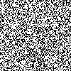
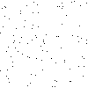

What gave you this idea? You were observing images with salt and pepper noise, with increasing percentage of noise. The question I asked myself - what happens to the nearest neighbour distance. Explain in 1 line about NNE.
Explain salt and pepper. Show some sample pics
 Display the SP ratios of all the images
Talk about the problem of the expected distance between 2 randomly selected points in a square
Show picture of the equation
Link to Youtube videos
to be done 13
Python code comes here
The following pyhthon snippet...blah
Python program below
to be done 13